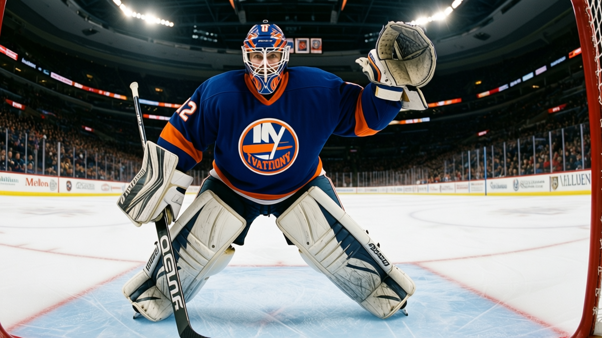
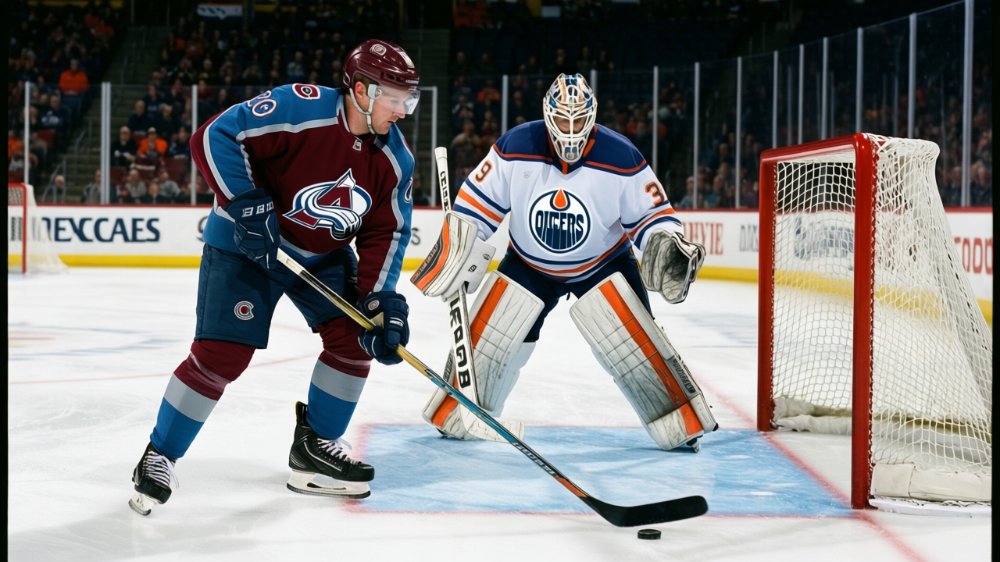
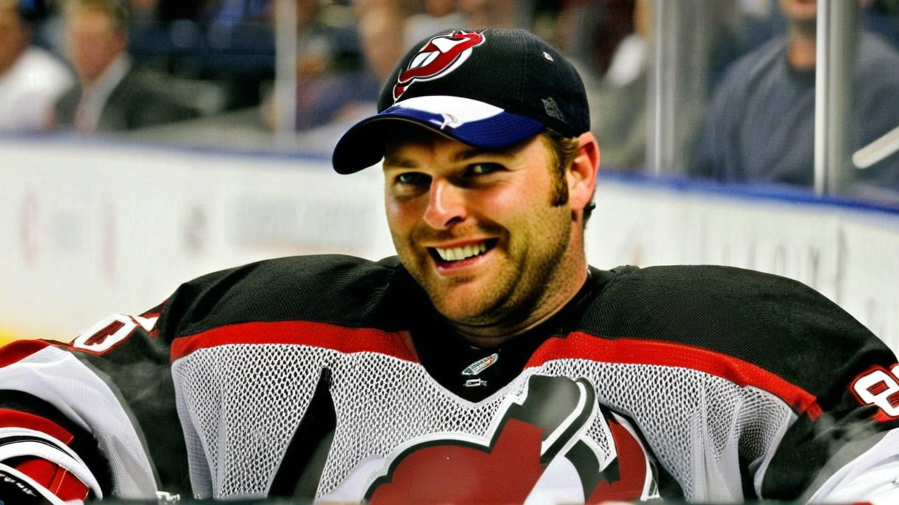

RECAP: Tampa Bay 7, Edmonton 1 -- a 29-shot night and 41 goals in 10
The Lightning's 7-1 over the Oilers keeps a 7-3 run alive and puts them 3 points behind Carolina.


 Ray Callum·2 min read
Ray Callum·2 min readThe Lightning's 7-1 over the Oilers keeps a 7-3 run alive and puts them 3 points behind Carolina.
Ray Callum·2 min read



Toronto's 10-game streak produced 18 goals against. Two netminders share the credit. Only one can start Saturday.


 Ray Callum·2 min read
Ray Callum·2 min read